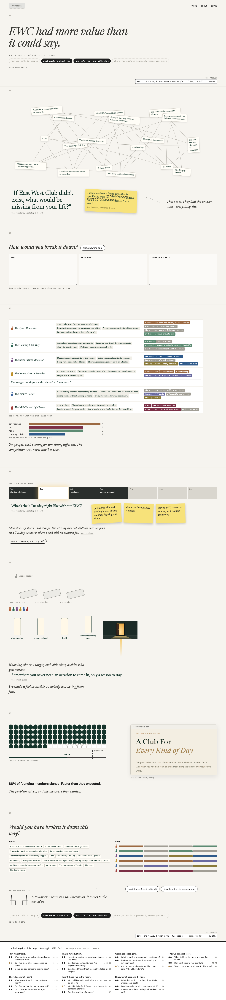
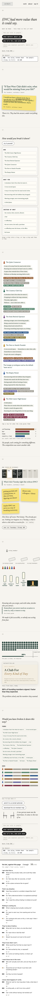
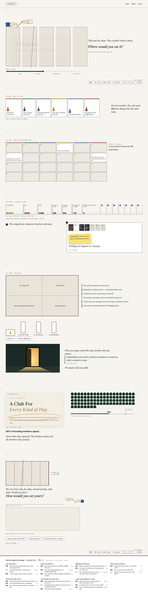
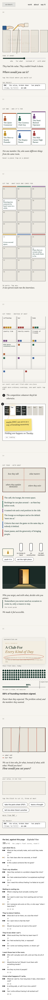
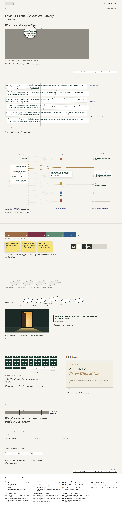
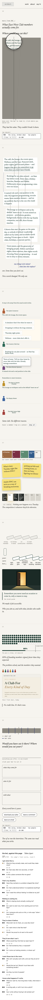
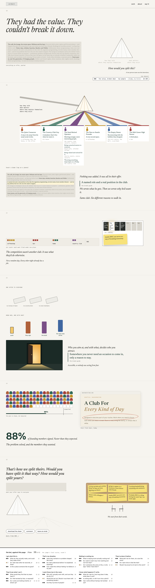
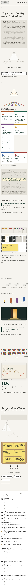

Study 85 · 6 November 2026 · Kahran
EWC, the value broken down, four ways
One EWC case study about one part of the work: the workshops and research that broke down the value (who it's for, what members come for, what they'd do otherwise, with what). Not the whole engagement; the site, the brand and the sales kit are other case studies. The Tuesday is one piece of evidence, in one section at most. The top 4 of 5 concepts after 3 judged rounds against all 21 bet answers, built whole; under each page, the bet against it.
"I don't love how much these are focused on the Tuesday... it feels like it's losing the insight because it's so focused on that."
Kahran, 6 Nov, on Study 84.a · Untangle
38 of 42 · fidelity 8 · visual 7
A knot of chips (who, what for, instead of what) that you sort or watch sort; then ours, six rows and the real competition; the Tuesday as one strip of evidence; dominoes that fall and stand back up; 88 of 100 seats; yours beside ours.
Judge: Spine is right: value broken down, Tuesday held to one section, no timeline; more of Kahran's own lines on the page than any other. Fixes it asks for: too many devices (sort, side by side, auto-playing dominoes, a door whose light runs into a seat); the four-labels row reads as case-study nav, keep it as what Joyus makes and give 'more from EWC' its own link; mark the bar counts 'our count' and reconcile home; the persona names are Joyus's writing; the home-page line sits outside 46-50; b4.i half done, the quote slot is empty. Here: the warm-up answer underlined is the founder's "a friend circle that is specifically from the EWC" (84's banned phrase is out); the counts are marked ours (home 3, one place per want); the home page is a picture, not a quote.


b · Exploded View
38 of 42 · fidelity 7 · visual 7
One block, taken apart in four cuts: who it's for, what each comes for (24 parts), what it replaces (14 trays), with what (four faces, his list). Back together with the seams showing.
Judge: Strongest single metaphor for value they couldn't break down; his list as four machined faces is the best b1.f on the table; the Tuesday held to one inset. Fixes it asks for: too much machinery (scrubber, 24 tiles, 14 trays, dominoes, tick, a drawing tool, a field); the persona names and gives are Joyus's writing set upright; the block's live line sits outside 46-50; b4.i still a pending bracket (a founder line exists, flagged, not used); keep his 'who you target... who you attract' wording. Here: his "who you target... who you attract" wording; the eight one-off evenings unlabelled until tapped; the founder bracket (§1) and quote frame stay hidden until a line is cleared.


c · Taken Apart
37 of 42 · fidelity 7 · visual 8
An undivided grey bar you can only read under a loupe; our proof marks cut it; the wiring diagram (wants, members, gives) is the hero; the Tuesday held to §3; you get the knife at the end.
Judge: The best visual discipline: one editor's-markup metaphor, the wiring diagram as a true hero, about a dozen short italic lines, two pen hands as the two-person team; the stet on the leagues line is the one tender moment any concept earned. Fixes it asks for: his 'the problem solved, and the members they wanted' was missing at the seats (put back here); the four brackets are forced; the lump is the guide's gives, which we wrote, so 'every word here is theirs' was untrue (changed here); the home-page line sits outside 46-50; §6 is three mechanics; b4.i quote slot empty. Here: "every word here is theirs" was untrue (we wrote the guide) and is now "Not a word changed. We only cut."; his "The problem solved, and the members they wanted." put back at the seats.


d · Prism
38 of 42 · fidelity 7 · visual 7
A pooled slab through a prism into six beams, one per member; the places they go instead in one bar with a postage-stamp Tuesday; a small first tile that stands the row up; seats in beam colours.
Judge: The title is his framing word for word; the prism facets carry his b1.f list; the six beams read in a glance; the Tuesday is a postage stamp. Fixes it asks for: the slab is built from the guide's per-member gives, which we wrote, so it is labelled here 'everything on offer, pooled', not 'what the club said to everyone'; low-contrast text as texture is still words standing in for a visual; b4.i is two empty frames (here: the home page, circled; the quote slot hidden); one tag format (aligned here); §5 carries too much. Here: the slab is labelled "everything on offer, pooled", not the club's voice; the tag matches the other three; the pride is the home page, circled; the quote slot hidden.


Open for Kahran: this part's own time for the tag (left as a dashed slot), and a client line for the pride slot (hidden; one candidate exists outside the 46-50 sources and is not used until cleared). Every string has a data-copy id in copy.json; ours are in words.json, scores and sections in concepts.json, then build.cjs; check.cjs holds it.